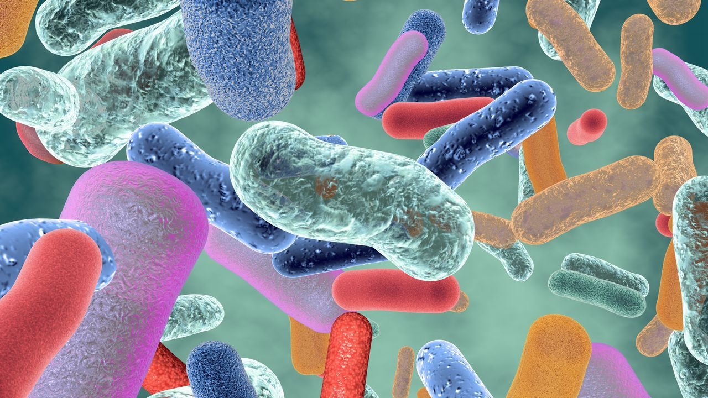

Definición de Bacteriología
La bacteriología es la rama de la microbiología que se ocupa de la morfología, estructura, clasificación y bioquímica de las bacterias. La disciplina de la bacteriología surgió durante el siglo XIX a partir de los intentos científicos de probar la "teoría de los gérmenes de la enfermedad", a saber, que las enfermedades eran causadas por organismos microscópicos que invadían las células huésped. Las bacterias son microorganismos unicelulares procariotas metabólicamente activos y se dividen por fisión binaria. Algunos de estos organismos juegan un papel importante en la patogenia de enfermedades. El tratamiento de la enfermedad bacteriana generalmente se realiza con antibióticos; sin embargo, la elección de los antibióticos puede variar según la estructura bacteriana y el metabolismo.
¿Cuál es el objetivo la bacteriología ?
Esta rama de la biología tiene como objetivo principal el estudio único y específico de las bacterias, dicho de otro modo, esta ciencia explica todos los mecanismos, y características que hacen distintivas a las bacterias de otros microorganismos, examina desde su morfología, reproducción, patogenicidad, género, especie, mecanismos de resistencia y más aspectos relacionados con estos organismo pertenecientes al reino monera.
¿Qué es la bacteriología ambiental?
Es una rama de la bacteriología que estudia aquellas bacterias relacionadas con el medio ambiente ya sea las que se encuentran dispersas en el agua, suelo, aire y ecosistema en general, la misma intenta explicar el impacto positivo y negativo de la relación de los microorganismos con el ambiente que nos rodea, definir la importancia de las mismas y la interrelación con otros grupos como las plantas, entre otros.
¿Qué es la bacteriología clínica?
Esta se encarga del estudio únicamente de las bacterias patógenas para el ser humano, basado en el diagnóstico clínico y tratamiento para la variada sintomatología que pueda presentar, además permite determinar la profilaxis y los mecanismos de acción que utilizan dichas bacterias para causar daño.